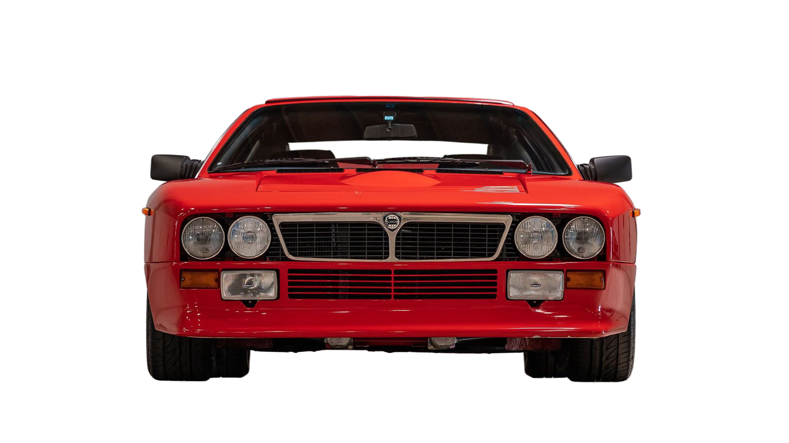
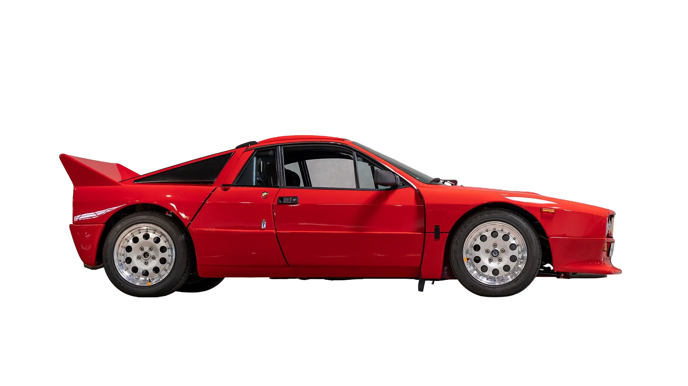
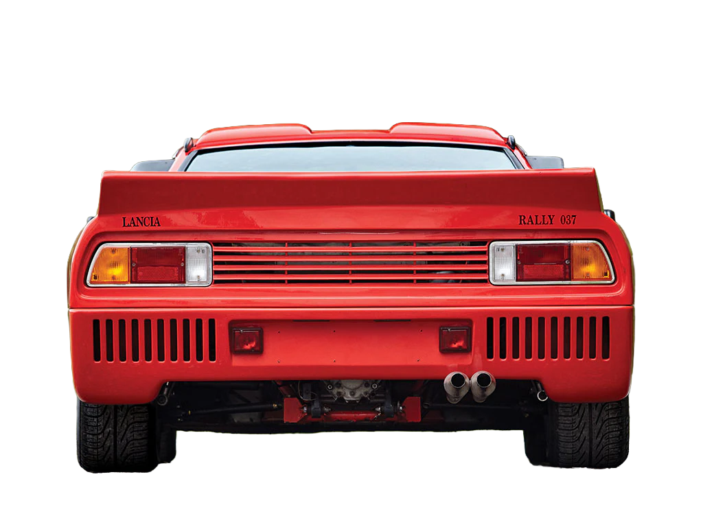

Lancia Rally 037은 1980년대 초반 그룹 B 랠리에서 유종의 미를 거둔 이탈리아산 자동차입니다.극단적으로 가벼운 차체와 슈퍼차저 엔진을 바탕으로 1983년 월드 랠리 챔피언십 우승을 차지했습니다.



The Last Stand
OTHER 메뉴에서 표시할 내용을 여기에 적어주세요.
여기에는 빠른 이동 링크나 관련 페이지를 넣어 사용자가 쉽게 탐색하도록 합니다.
추가 설명, 간단한 팁 또는 현재 프로젝트에 대한 짧은 문구를 넣을 수 있습니다.